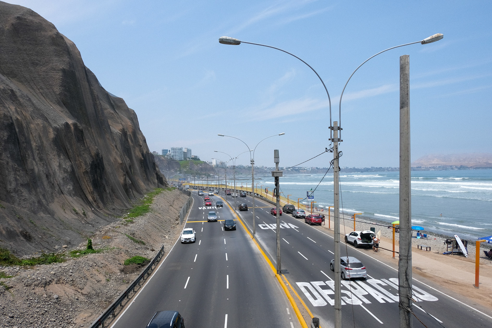
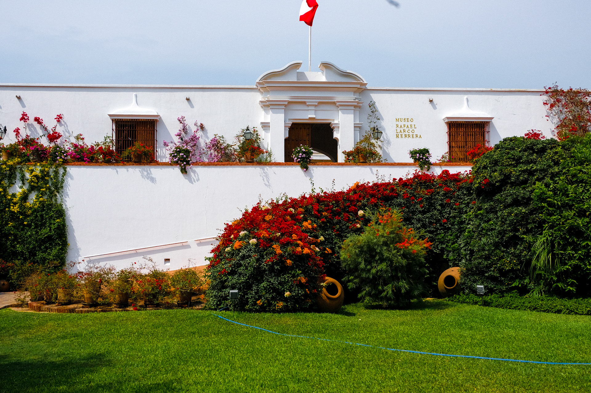
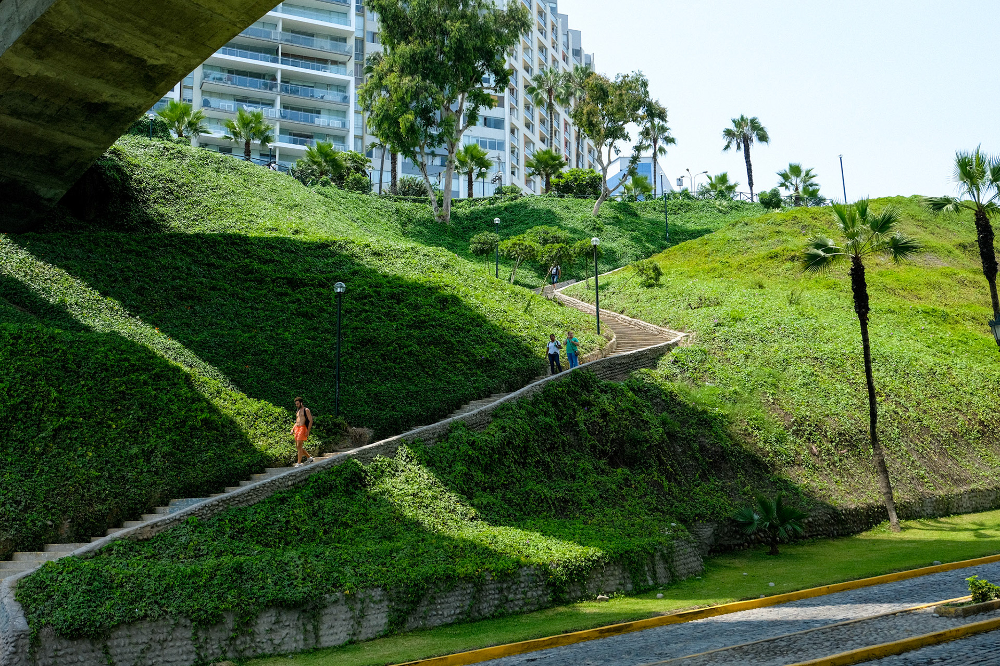

The flights to Peru were largely empty back when I worked for Delta. Lima probably wasn’t my first choice of destination that Friday afternoon, but in the end it seemed as good a place as any to spend a weekend (or, more accurately, a Saturday). Coincidentally, someone from my church at the time was on the same flight, going on a mission trip. She was on her way to spiritually colonize the same place I picked for my mini-vacation. Bad sign?
I arrived in Lima at around 3 in the morning, which gave me a good reason to try the coca leaf candies and teas being sold all over the shabby airport. It was NOT (technically) cocaine, but I was, let’s say, wide awake and alert by the time dawn rolled around. Uber had just come to Peru, so I breezed past the taxi hustlers and into my totally unlicensed chariot to downtown.
I knew it’d be summer in the Southern Hemisphere, but I wasn’t prepared for the hot, wet blanket of mist that smothered me as soon as I stepped out the car in the Miraflores district. I’ve never experienced such humidity before or since, not in my time living in Georgia or South Carolina or even my summer in Orlando.
I looked around. Some fancy hotels. Too few, I think, for this to be a bona-fide luxury tourist destination. Locals were already out on their early morning runs. The Pacific Ocean was right there, below me and to the west. In fact, it was quite aways down. I inched closer. I was on a cliff - the entire city was - on top of grey-brown rocks at least 3 or 4 stories tall, with some nets haphazardly attached. At the bottom was a highway, some rocks that approximated a beach, and the gorgeous ocean water.
I sat down on a nearby bench for a while. When I travel, I’m mostly just looking for a place to sit. This was one of the worst times in my life (besides all the times that came before it and all the times that came after it). But, with my perfect view and perfectly legal coca candies, my mind felt clear.
After a while, I began my usual wandering. I found a little museum, and it was the most beautiful museum in the world. The walls were white stucco and were lined with wonderfully overgrown vines and flowers. Not in an instagram cafe kind of way, more like a mythical garden. I think the museum had the world’s largest collection of Pre-Columbian indigenous pornographic pottery. Erotic little clay figures. And the museum cafe and the best butternut squash ravioli I’ve ever had. But I guess I don’t really eat butternut squash ravioli very much.
I got tired of walking, so I did what I’m ashamed to say I do very often in a foreign city. I went to the theaters. I’m aware that it sort of defeats the purpose of traveling to do something you could do at home.
I bought a ticket for Call Me By Your Name (2017). I could say that I chose that particular movie because it was the nearest showtime or because I wanted to keep abreast of the Academy Awards season. In reality, the choice was not in the least bit arbitrary and more than a little rebellious.
I couldn’t have seen the film at home. I was under a microscope. This was a time when my father would comb through my Prime Video history for anything gay. He called me early one morning while I was on campus, interrogating me about Mysterious Skin. (Can I have a fucking Joseph Gordon Levitt marathon in peace??) And, the consequences for having anything.. a little more explicit on my phone or browsing history were, as I found out repeatedly growing up, a lot more intense than a stern phone call. So I wouldn’t have risked it.
I don’t remember if, at that time, I was still claiming to myself and God that I would follow the Lord’s will and never touch a man as long as I lived. Or maybe I had accepted I was gay by then, but was agonizing over how every friendship I had could be (and was) destroyed by that fact. Either way, the film was enticing. I purchased a ticket, feeling guilty, and I watched the movie.
When I exited the theater, I return to the coast, found my way down the cliffs, and walked along the ocean. People were relaxing in the late evening on the shards of rock they called a beach. I sat for a while, before returning to the airport that night and flying back to my shitty, lonely life. If you asked me then about the movie, I’d have had no analysis. Just a heavy sadness.
Of course, I thought it was a beautiful film. It is a beautiful film. But it’s a little difficult to tell at first whether the aesthetic of the film does all the heavy lifting to make it good. It’s not very hard for a film that looks nice to kind of lull you into believing in its virtues. What do you get when you take off the mask? Maybe the whole thing is just a couple of Sufjan Stevens songs, some Italian tourism promotion, a J Crew summer fashion look-book, and a statutory rape case all slapped together. Without the support of the scenery - if the characters were shuffling around a house in Denver - would the film come crashing down?
What if the emperor has no clothes? Because of its position as one of a select few gay films with a decent budget, all the movie has to do is be a canvas for an audience member, for me, to project their/my loneliness and longing onto. The movie really is playing on easy mode.
But it is more than the sum of its parts. Despite playing along side the void, the black hole, that is Armie Hammer, Chalamet manages to squeeze out some acting worth more than the picturesque backdrop and the lush string interludes sandwiching his words. I’ll pull up the scene where he whispers “you know what things” on YouTube every once and awhile just to see it again. Great stuff from Timmy. And Michael Stahlburg as the dad..the scene with him at the end…marvelous.
It’s more than a trick of the light that makes this movie a decent way to spend some time. 3 and half stars.


